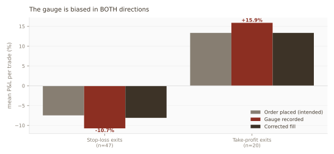
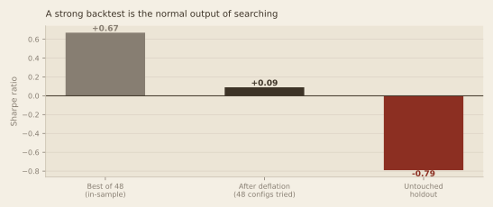
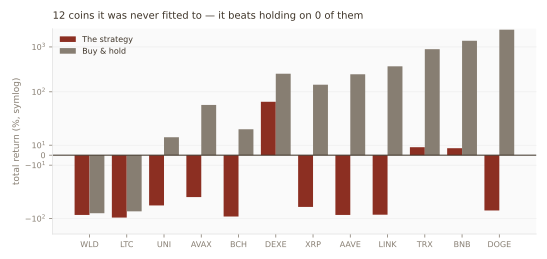

For months I read numbers off a measuring instrument I had never calibrated. When I finally checked it, it was biased in two directions at once — which is precisely why it looked fine.
By a process engineer (SPC) in semiconductor assembly & test — the measurement-systems discipline I apply to production gauges, turned on my own code. Paper trading throughout; no real money.
In semiconductor quality you do not run a capability study on a gauge that has not passed measurement-system analysis. It is the first thing you learn and the last thing you skip. If the instrument is biased, every Cpk you compute afterwards is a confident statement about nothing.
In software research, almost nobody does MSA at all. The backtest engine is the gauge — it is the thing standing between a price series and every number you will ever believe — and it ships unvalidated because it produces plausible output and nobody diffs plausible output against reality.
I had been doing sophisticated statistics on the readings of an instrument I had never checked.
The fills were never compared against the order the book intended to place. That comparison is the entire audit, and it takes one afternoon.
The stops filled at the wrong price. A stop-loss rests on the exchange and triggers intrabar. The engine instead closed the position at whatever price it observed on its next poll. Price gaps through the stop between polls, so a stop configured at −12% recorded an average realised loss of −12.9%, worst case −27.7%. The instrument was systematically pessimistic.
The take-profits filled better than the limit. Same defect, same line of code — and here it ran the other way. A resting limit sell fills at the limit and never above it. The engine booked whatever price it happened to see, recording +18% on a +15% order. Money that does not exist. Systematically optimistic.
And the price feed was silently truncated. The history fetcher passed a day count where the exchange API expected a candle count. A request for 180 days of hourly bars returned 185 bars — eight days — instead of 4,320. Every intraday study I had run was reading eight days of data and calling it six months.

This is the part worth carrying away. A gauge with one bias is easy to catch: the mean drifts and something looks wrong. A gauge biased in two directions at once produces a plausible net, a plausible P&L curve, and two badly wrong tails. It passes every sniff test you would think to apply, because the errors are busy cancelling each other in exactly the statistic you are checking.
Correcting the fill model moved the book from a recorded −$2,548 to a true −$1,856. Roughly $692 of the loss had been manufactured by the instrument.
| Exit type | n | Order placed | Gauge recorded | Corrected fill |
|---|---|---|---|---|
| Stop-loss | 47 | −9.5% | −10.7% | −8.1% |
| Take-profit | 20 | +13.3% | +15.9% | +13.3% |
| Signal reversal | 94 | market | −0.5% | −0.5% |
But the strategy was still dead, and now I could see why instead of merely that it was. With trustworthy fills the diagnosis is one line of arithmetic:
A 39.9% win rate needs a payoff ratio of 1.51 to break even. It had 1.13. The system was losing by arithmetic — no signal quality could have saved it.
The take-profit was capping winners at +10–15% while stops let losers run past their level. Both errors pointed the same way: winners cut short, losers left long — the precise inverse of what any system with a fat-tailed payoff requires. This was never a signal problem. It was a structural one, and it had been sitting inside a distorted gauge where it could not be read.
With the instrument fixed I re-ran the research properly — and found the experimental design had been manufacturing false positives independently of the gauge.
42 paper books were running simultaneously. That is not 42 chances to find an edge. It is one chance, divided 42 ways.
A 48-configuration sweep produced a best in-sample Sharpe of +0.67. Deflating it for the number of configurations tried — the Sharpe you would expect from luck alone at that search breadth — leaves +0.09. On an untouched holdout it scored −0.79.

The final rule — daily bars, no take-profit, trailing stop, regime gate — survived its chronological holdout. I pre-registered it, wrote its kill condition, and seated it as the one strategy allowed to claim an edge.
Then I ran it, frozen and untouched, on twelve liquid coins it had never been fitted to. It beat buy-and-hold on zero of twelve. Median return −60% against buy-and-hold's +194%.

It died the same day it was seated, and it had never taken a live trade. The cause was the trailing stop: it capped the outlier winners the strategy depended on — best trade +1,293% → +112%. I had spent a week establishing that capping winners is fatal, and then seated a rule that capped them harder, through a mechanism I had not recognised as the same mistake.
It survived the time-holdout because a later window of the same instruments is a weak test. A different population is a hard one. They are not the same control, and only the second one caught it.
Every failure here has an exact twin in quality engineering. I already knew all of them. I simply did not recognise them out of uniform.
| In the trading system | The same thing, at work |
|---|---|
| Backtest engine never validated | Running capability studies on a gauge that never passed MSA |
| Two biases cancelling in the mean | Gauge bias that only shows at the spec limits |
| 48 configs → one looks great | Testing factors until one goes significant |
| Tuning rules to past prices | Fitting control limits to historical data |
| Universe screened on today's survivors | Analysing only the lots that shipped |
| Optimising per-trade Sharpe | Chasing a KPI that does not track the outcome |
The last one cost me the most. Ranking exits by per-trade Sharpe favoured the trailing stop, because a trailing stop produces many small consistent wins — and a fat right tail looks like variance to a Sharpe ratio. I optimised a metric that was actively penalising the source of the profit. Choosing the objective is a modelling decision, and the wrong one does not fail loudly. It quietly inverts your conclusion and hands you a confident answer.
The system now grades zero strategies and says so on every run. That is the correct output. The alternative — a plausible equity curve drawn by an uncalibrated instrument — was always available, and would have cost real money to disbelieve.
python3 scripts/export_gauge_trades.py # 163 spot trades from the live system
python3 scripts/gauge_rr.py # recalibration + figures
Every number above recomputes
from data/gauge_trades.csv. The 32 short-side rows in the raw state are excluded, not
averaged in — a live short branch in close_position() had been pricing them with
inverted P&L in a long-only spot book. That was defect four.